Playtesting & exporting
Press play, walk your own world with a little Knight (or Fox), see the real pixel look at runtime — then get your world out as a 3D model for Blender or Roblox, or as a game anyone can run.
What you'll learn
- The Run bar: F5 / F6 / F7 / F8 and how they map to Roblox's Play, Play Here, Run and Stop.
- The Main Scene setting — why F5 may not run the world you're looking at.
- Every demo player control (move, walk, jump, orbit, zoom, F1, F3), each with a clip.
- Adding the demo player to your scene — and the one mistake that makes it fall into the void.
- The Fox variant, the F3 Pixel tuner, and the Game tab.
- Editor Pixel Preview vs the real game, and how window size changes the pixels.
- Getting your world out: Export GLB, Bake Meshes, a playable build, and screenshots.
A few Godot words first
| Word | What it means | Roblox-ish equivalent |
|---|---|---|
Scene (.tscn) | A saved tree of nodes — your world is one scene; the Knight is another scene. | A place file / a Model saved to your Toolbox |
| Node | One object in the scene tree (terrain, camera, sun, player…). | An Instance in the Explorer |
| Instance a scene | Drop a copy of one saved scene inside another. Edits to the original flow into every copy. | Inserting a package from the Toolbox |
| Main Scene | The scene the game starts in (F5 runs it). | The place that opens when you hit Play |
res:// | "Inside this project folder." res://demo/player.tscn is demo/player.tscn in your project. | — |
| Inspector | The dock that shows the selected node's properties. | The Properties window |
| Export | Turn the project into a standalone program (Windows/Linux/macOS…). | Publish (but you get files, not a cloud place) |
GLB (.glb) | A single-file 3D model format (glTF 2.0). Blender and Roblox Studio both import it. | A mesh you bring in with the 3D Importer |
Running the game: the Run bar
Top-right of the editor sits a row of small buttons — the Run bar. Hover any of them to see its tooltip. Click a numbered dot to learn each one:
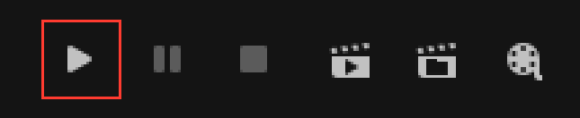
Run Project ▶
Tooltip: "Run the project's main scene." Launches the scene set as Main Scene. In this project that's res://demo/hex_island.tscn — not your own world — unless you change it.
- Shortcut
- F5
Pause ⏸
Tooltip: "Pause the running project's execution for debugging." Freezes the running game. Greyed out until something is running.
- Shortcut
- F7
Stop ⏹
Tooltip: "Stop the currently running project." Closes the game. The usual way to quit a playtest (the demo has no Esc-to-quit).
- Shortcut
- F8
Remote Deploy ▾
Tooltip: "Remote Deploy". One-click deploy to connected devices (phones etc.). Not used in this guide.
Play Scene ▶ (clapperboard)
Tooltip: "Play the currently edited scene." Runs whatever scene tab is active, without changing the Main Scene. Your go-to button for testing your own world. It runs the saved file, so save first.
- Shortcut
- F6
Play Custom Scene
Tooltip: "Play a custom scene." Opens a picker to run any scene file in the project.
- Shortcut
- Ctrl+Shift+F5
Movie Maker ▾
Tooltip: "Enable Movie Maker mode. The project will run at stable FPS and the visual and audio output is recorded to a video file." Use it to record a trailer of your world.
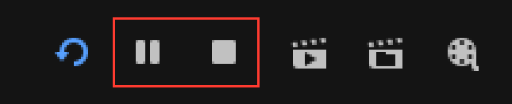
While a game runs, ▶ turns into a blue circular arrow (click it to restart the game) and ⏸ / ⏹ light up. The Scene dock also gains a Remote / Local switch: Remote shows the live tree of the running game, Local the scene as saved.
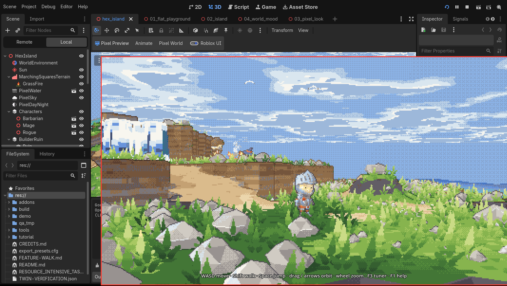
| Roblox Studio | Godot | Difference |
|---|---|---|
| Play (F5) — your avatar spawns at a SpawnLocation | F5 Run Project / F6 Play Scene | There's no built-in avatar. Whatever the scene contains is what spawns — here, the demo player you add. |
| Play Here — spawn at the camera | — (no direct equivalent) | Move the player node where you want to start instead (Inspector → Position). |
| Run (F8) — simulate with no character | F6 on a scene without a player | A scene with only a Camera just shows that camera's view. |
| Stop (Shift+F5) | Stop F8 | Careful: F8 means Run in Roblox but Stop in Godot! |
| Pause (in Run mode) | Pause F7 | Same idea. |
Which scene does F5 run? The Main Scene setting
F5 always runs the Main Scene. To see or change it: Project menu → Project Settings… → General tab → Application → Run → Main Scene.
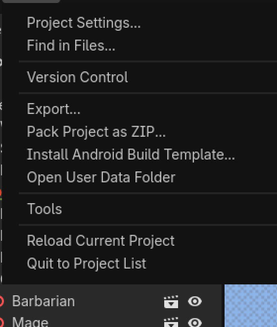
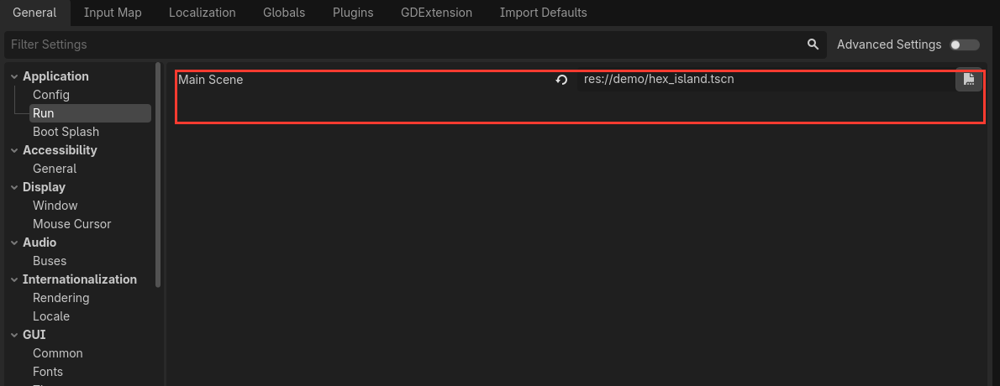
Run selected; the Main Scene row reads res://demo/hex_island.tscn, outlined in red.">res://demo/hex_island.tscn in this project. The file button at the far right of the row picks a different scene.Use F6 (recommended)
Open your world's tab, save, press F6. Nothing in the project changes. Perfect for trying things.
Change the Main Scene
Point Main Scene at your world when it's "the game". Then F5 — and any exported build — starts there.
Ctrl+Shift+F5
Run some other scene once, from a picker, without opening it.
The Game tab (play inside the editor)
The main-view switcher at the top centre reads 2D | 3D | Script | Game | Asset Store. The Game tab is where Godot can show the running game inside the editor, with a toolbar for poking at it live.
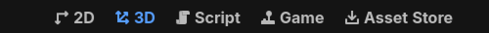
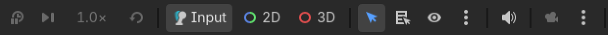
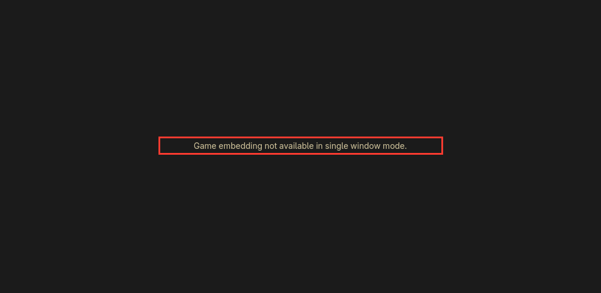
If you see this message, embedding is switched off by Editor Settings → Interface → Editor → Single Window Mode. Turn it off (the default) and the game renders inside the Game tab. Either way works for playtesting — it's just where the window appears.
The Game tab is like Studio's play mode where you can still click things in the Explorer while the game runs. Its 2D/3D toggles let you select live nodes; the Scene dock's Remote view is the live Explorer.
Demo player controls
The project ships a ready-made character: res://demo/player.tscn (the Knight). When a game starts, a hint line appears at the bottom of the screen and fades after about 10 seconds:
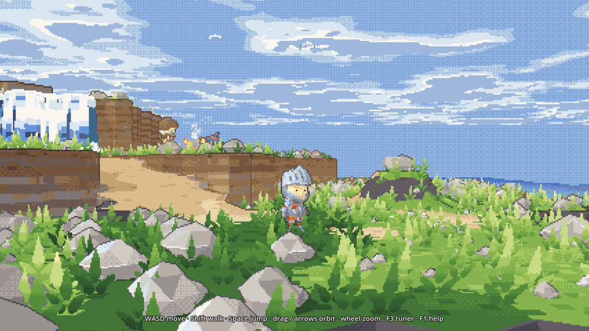
Move
Runs forward / back / left / right relative to the camera. The character turns to face the way it's moving. Keys are by position, so they work on AZERTY keyboards too.
- Keys
- W forward · S back · A left · D right
Walk (slow)
Hold Shift while moving for a slower walk instead of a run — handy for lining up a screenshot.
Jump
A modest hop of about 1 m. The camera keeps the character centred, so it's the background you'll see bob.
Orbit camera (mouse)
Spins the camera around the character, left/right and up/down — from eye level to looking straight down.
Orbit camera (keys)
Same orbit, using ← → (spin) and ↑ ↓ (tilt). Useful on a laptop trackpad.
Zoom
Moves the camera closer or further away. It stops at a minimum and maximum distance.
Help (F1)
Shows the hint line again after it fades.
Pixel tuner (F3)
Toggles a developer overlay for inspecting and tweaking the pixel look live. See the F3 Pixel tuner below. Does nothing in a scene without a PixelDiagnostics node — including your own first_world.
Esc
Does nothing in the demo. The mouse isn't captured, so there's nothing to release. Quit with Stop / F8 in the editor, or the game window's close box.
These are the Roblox defaults you already know: WASD to move, Space to jump, drag to orbit, wheel to zoom — a classic over-the-shoulder follow camera. One difference: Shift slows you down here (walk), it isn't a sprint or shift-lock.
The game may look slow or choppy in these clips because they were recorded on a slow computer. On your machine it will run at normal speed.
Tutorial: put the player in your world
You'll take the world from Your first world (res://tutorial/guide/first_world.tscn), add the Knight, and walk around in it. The finished result is in the project as res://tutorial/guide/first_world_player.tscn — open it to compare, or just press F6 on it to skip ahead.
Move the PlayerRig above the ground before you press F6.
A freshly added player appears at the world origin (0, 0, 0), which is usually inside your hill. A character that starts buried in the terrain falls straight through on the first frame — the camera falls with it and all you see is sky and sea. It is not a bug: terrain collision works fine. Set its Position to something like y = 8 (higher than your tallest ground) and it lands normally.
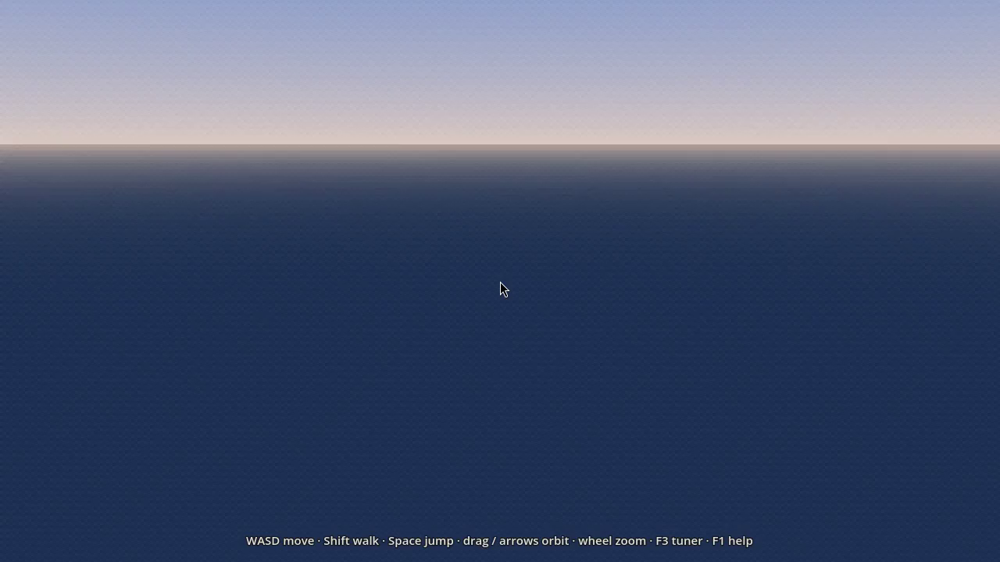

Drag the slider: left = forgot to move the player, right = moved it up.
- Open your world. In the FileSystem dock double-click
res://tutorial/guide/first_world.tscn(your scene from page 02). In the Scene dock click the World root node to select it — the new player will be added under whatever is selected. - Instantiate the player. Click Instantiate Child Scene — the chain-link icon at the top of the Scene dock, next to + (tooltip "Instantiate a scene file as a Node…"). The Select Scene picker opens.
Select World → Instantiate Child Scene → pick player.tscn→ a PlayerRig node appears. - Pick
res://demo/player.tscn. It's at the top of the list, or type player to filter. (fox_player.tscnis the Fox.) Click Open.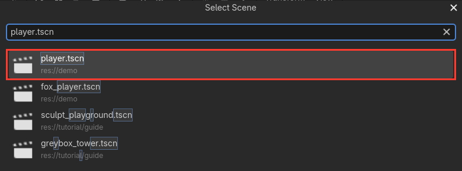
The Select Scene picker: player.tscn(the Knight) at the top,fox_player.tscnjust below. - Check it was added. A PlayerRig node now sits under World, after Birds. The clapperboard icon next to it means "this is an instanced scene".
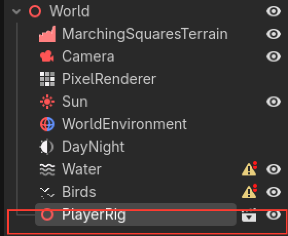
PlayerRig added under World. It is sitting at (0, 0, 0) right now. - Move it above the ground — don't skip this. With PlayerRig selected, in the Inspector expand Transform → Position and type x 5, y 8, z 4 (press Enter after each). The hill in
first_worldpeaks at about 5.3 units near (5, 4), so y = 8 drops the character a short, safe distance onto the ground. You can also drag the green (Y) arrow of the move gizmo in the 3D view.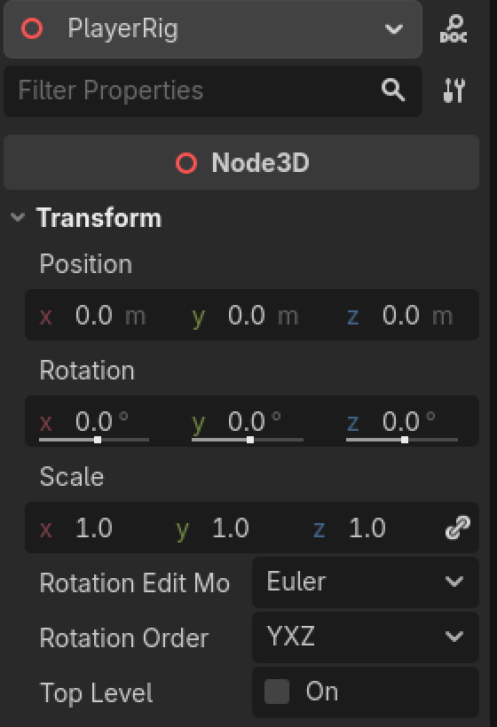
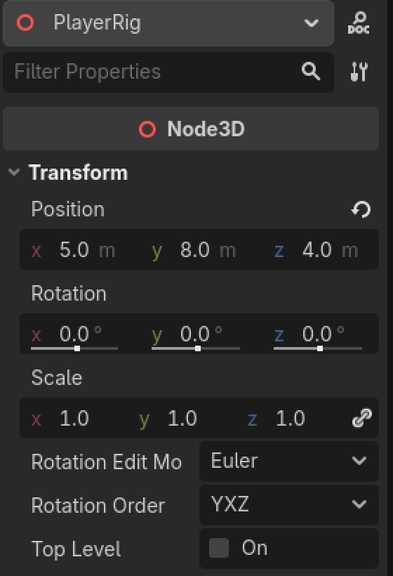
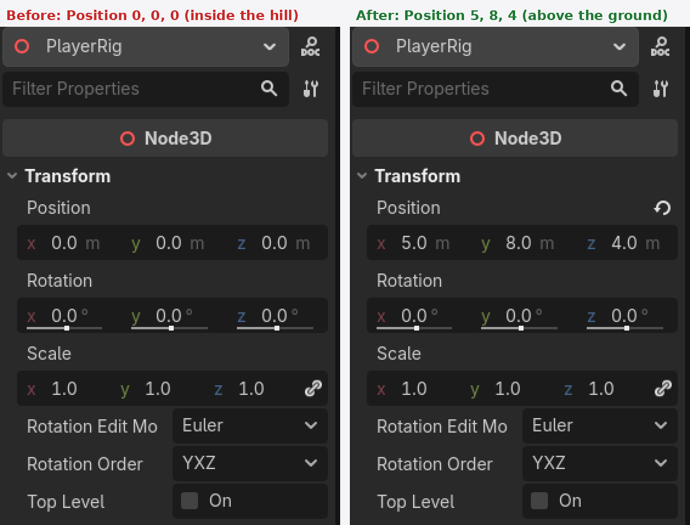
Before and after, labelled: (0, 0, 0) is inside the hill; (5, 8, 4) is above it. - Save. Press Ctrl+S. F6 runs the saved file, so unsaved changes won't show up. (Want to keep your original untouched? Use Scene → Save Scene As… and give it a new name, like we did with
first_world_player.tscn.) - Press F6 ("Play the currently edited scene"). The Knight drops onto the terrain in the forest clearing.
Landed. The Knight stands on the sandy path in the clearing, trees around, the sea behind. - Walk around. Try every control from the table above.
Walking through the trees with W/A/S/D. Orbiting by dragging — from eye level to top-down. Mouse-wheel zoom in, then out. 
The camera tilted down to near eye level: the wooded hilltop you built, with the sea behind. - Stop. Press F8 (or close the game window). Edit, save, F6 again — that's the playtest loop.
What "forgot to move it" looks like
If all you see after F6 is sky over dark water and no ground at all, the player fell through. Stop (F8), select PlayerRig, raise its Position Y above your highest ground, save, and play again. That is always the fix.
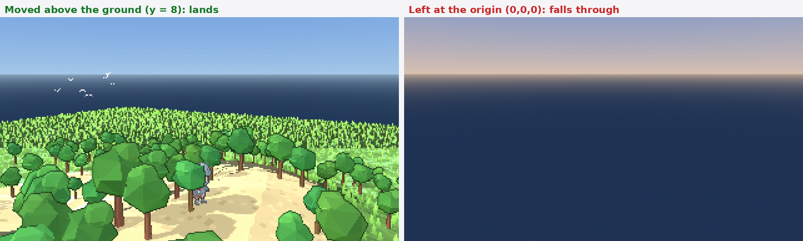
F3 does nothing in first_world — that overlay needs a PixelDiagnostics node, which only the demo island has. F1 and all movement and camera controls work exactly as on the demo island.
In Roblox a SpawnLocation decides where you appear. Here the player node is the spawn point: wherever its Position is when the game starts is where it starts. Put it a little above the ground, the way you'd raise a SpawnLocation so avatars don't spawn inside terrain.
The Fox variant
res://demo/fox_player.tscn is the same character rig with a Fox model instead of the Knight. Same script, same controls, same rule: move it above the ground. Add it the same way (pick fox_player.tscn in step 3). To swap an existing Knight, delete PlayerRig and instance the Fox instead.
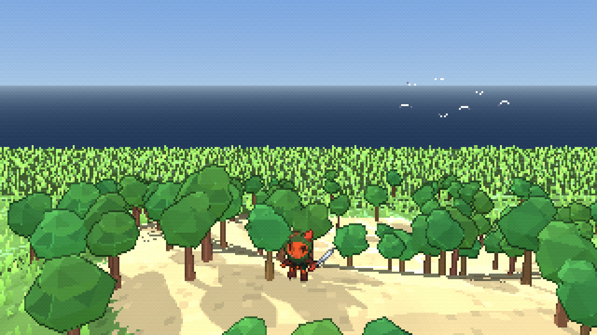
The F3 Pixel tuner (developer overlay)
In the demo island (res://demo/hex_island.tscn) press F3 while playing to open the Pixel tuner. It comes from a PixelDiagnostics node in that scene. Everything you change here is live-only and not saved — a safe playground for seeing what each effect does.
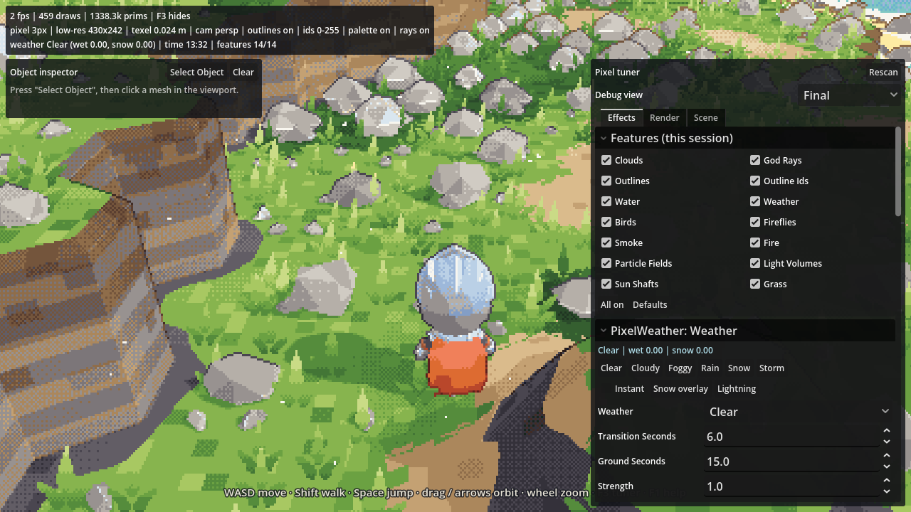
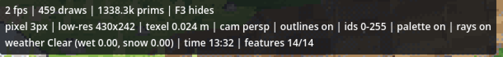
Status line 1
fps | draws | prims | F3 hides — frame rate, draw calls, triangles drawn (in thousands), and a reminder that F3 hides the overlay.
Status line 2
pixel <N>px | low-res W×H | texel <m> | cam persp | outlines on | ids 0-255 | palette on | rays on — how big each game pixel is on screen, the size of the low-res image the game draws, how many metres one pixel covers, the camera type, and which pixel features are active.
Status line 3
weather <type> (wet, snow) | time HH:MM | features used/total — current weather and wetness/snow, the day-night clock, and how many features are on.
Select Object / Clear
Click Select Object, then click a mesh in the game to inspect and tune how that object is pixelized. Clear deselects.
Rescan
Re-finds the effects in the scene.
Debug view
Shows one internal layer of the renderer instead of the final picture. Default Final (the normal look). See The pixelizer for what the debug views mean.
Effects / Render / Scene tabs
Three pages of live settings. Effects is shown below.
Features (this session)
Checkboxes to switch effects on/off: Clouds, God Rays, Outlines, Outline Ids, Water, Weather, Birds, Fireflies, Smoke, Fire, Particle Fields, Light Volumes, Sun Shafts, Grass. All on ticks everything; Defaults restores the starting set.
PixelWeather section
Quick buttons Clear · Cloudy · Foggy · Rain · Snow · Storm; Instant, Snow overlay, Lightning; plus Weather dropdown, Transition Seconds (6.0), Ground Seconds (15.0) and Strength (1.0). See Sky, weather, water & effects.
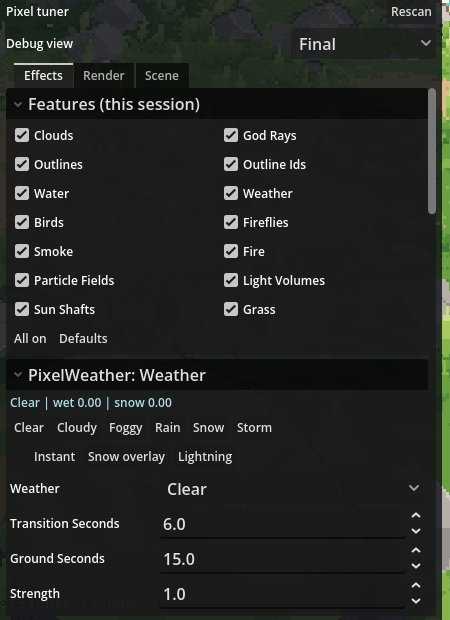
Run the demo island (F5 in this project), press F3, click Storm, then untick Outlines. Watch the world change. Stop and run again — everything is back to normal, because the tuner never saves.
The pixel look: editor preview vs the real game
In the editor, the 3D view normally shows your world as smooth, high-resolution 3D with a grid and gizmos. The Pixel Preview toggle in the 3D-view toolbar switches it to the game's own pixel renderer, so you can see what players will see without pressing play.
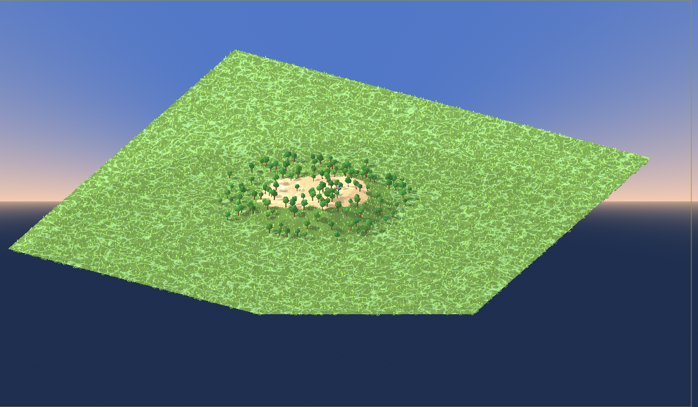
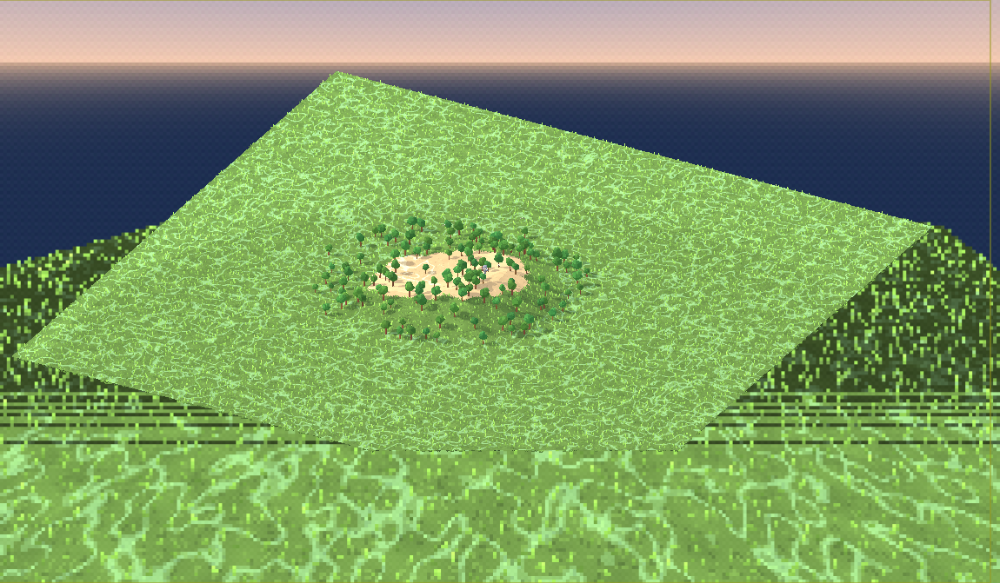
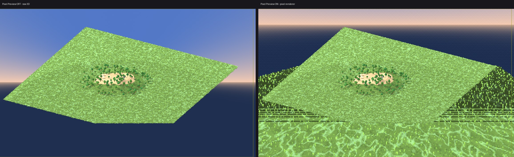
| Editor, Pixel Preview OFF | Editor, Pixel Preview ON | Running game (F5/F6) | |
|---|---|---|---|
| Renderer | Raw 3D | The game's PixelRenderer | The game's PixelRenderer |
| Grid, axes, gizmos | Yes | Grid hidden by the pixel image | None |
| Character, movement | No | No | Yes |
| Use it for | Precise sculpting / placing | Judging the final look while editing | Testing how it feels |
Pixel Preview ON matches the runtime look, minus the editor clutter. More on the renderer in The pixelizer.
Window size and scaling
This one surprises people. The project's Stretch Mode is disabled, so the game does not take a fixed small image and blow it up. Instead the pixel renderer works out its low-res image from the current window size, keeping the same camera framing:
- Bigger window → more, finer pixels (more detail).
- Smaller window → fewer, chunkier pixels (more retro).
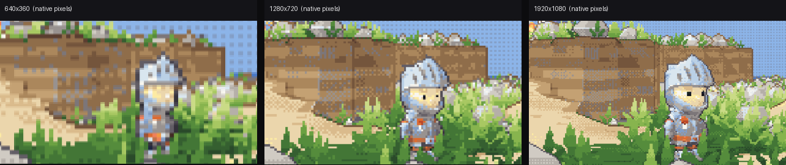
The settings live in Project Settings → General → Display → Window:
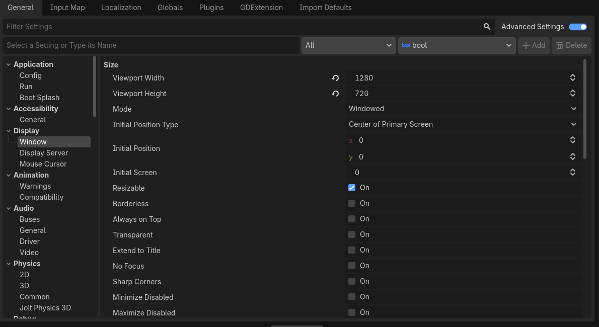
Window, Size section: Viewport Width 1280, Viewport Height 720, Mode Windowed, Resizable on.">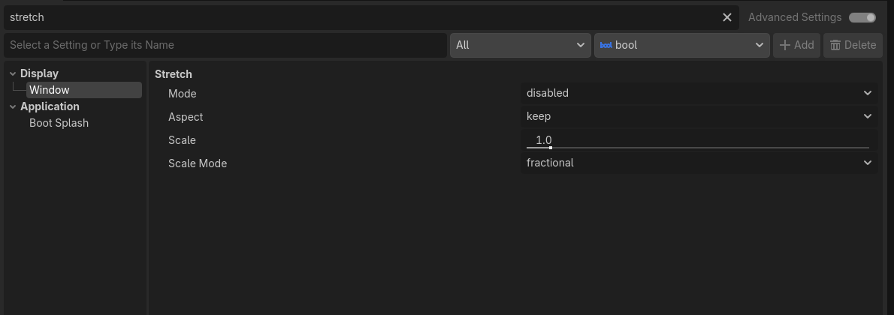
Window, Stretch section: Mode disabled, Aspect keep, Scale 1.0.">Viewport Width / Height
The size the game window opens at.
- This project
- 1280 × 720
Mode
Windowed, fullscreen, etc. at startup.
- This project
- Windowed
Resizable
Whether players can drag the window edges. On here — and resizing changes pixel fineness, as shown above.
- This project
- On
Stretch Mode
How Godot scales the picture to the window. disabled here, because the pixel renderer handles resolution itself.
- This project
- disabled
Stretch Aspect
How the aspect ratio is kept when stretching.
- This project
- keep
Stretch Scale
Extra scale factor.
- This project
- 1.0
Want the same chunky look no matter the window? Adjust the pixel size on the renderer instead of the window settings — see The pixelizer.
Getting your world out
There are three different "exports". Pick the one that matches what you want:
Export GLB
The terrain as a 3D model file.
For Blender, or bringing your terrain into Roblox Studio as a MeshPart.
Bake Meshes
A frozen static copy inside the scene.
Plain meshes you can keep, tweak or export with the rest of the scene.
Project → Export…
A playable game program.
Something friends can download and run without Godot.
Export GLB (terrain → Blender / Roblox)
These buttons are on the terrain's Settings tool, Storage page (full details on Chunks, settings & saving).
- Select the terrain node (MarchingSquaresTerrain) in the Scene dock.
- Open the Terrain Settings tool: the left toolbar, or press 9.
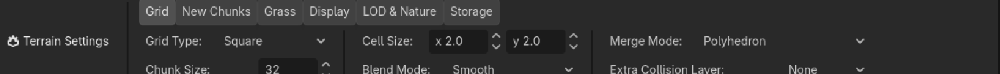
The six Settings pages. Click Storage. - Click the Storage tab.
- (Optional) Check the terrain's Export Path property in the Inspector. Default:
res://terrain_export.glb. Safer: a folder outside your project (see the warning below). - Click Export next to Export GLB:. The terrain bakes chunk by chunk, then the file is written. The editor pauses for several seconds — that's normal.

The inline progress bar. Cancel stops the export. - Import the
.glbinto Blender (File → Import → glTF 2.0) or Roblox Studio (3D Importer → pick the .glb).
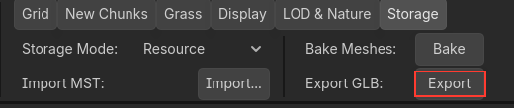
What you get (verified on the demo island): a valid glTF 2.0 file containing one mesh called Terrain under a node MarchingSquaresTerrainExport, one material and one baked texture atlas — your ground textures, the blending between them and the walls are all painted into that one image. The demo island's file was about 39 MB because the atlas is high resolution.
If all of these are true: the Export Path is inside the project folder, the renderer is Compatibility (the renderer name sits in the editor's top-right corner), Use Multiple Threads import is on (Project Settings → Editor → Import, with Advanced Settings switched on), and the atlas has two or more textures — the addon stops and asks you to confirm ("…the Godot editor can crash while importing a GLB that holds two or more textures…", Export Anyway / Cancel). That's because Godot immediately tries to import the new GLB, and that import can crash.
To avoid it: export to a folder outside the project (or one containing a .gdignore file), or turn off multi-threaded import, or use the Forward+ / Mobile renderer. When in doubt, press Cancel and change the Export Path.
Export GLB is your bridge back into Roblox. In Studio open the 3D Importer, pick the .glb, and the terrain arrives as a MeshPart with the baked texture. Note it's a mesh, not Roblox Terrain — you can't sculpt it with Studio's Terrain Editor afterwards. Make shape changes here and re-export.
Bake Meshes
The Bake button next to Bake Meshes: (same Storage page) turns the live terrain into ordinary static mesh nodes (MeshInstance3D) in your scene — a frozen copy that no longer depends on the terrain tool. It's undoable. Full details of what it creates are on page 06 → Storage.
Bake Meshes keeps things inside Godot; Export GLB writes a file for other programs. If you only want the world in your game, you don't need either — the terrain runs as-is.
Exporting a playable build (Project → Export…)
To give someone a game they can run without Godot, you export the project.
- Make sure the Main Scene is the scene you want the game to start in.
- Open Project → Export…. The Export dialog lists presets — one per platform.
- This project already has one: Linux (Runnable), exporting to
build/linux/marching-squares-terrain.x86_64. For Windows or macOS click Add… and choose the platform. - If the dialog shows red "No export template found…" lines, click Manage Export Templates and install them (next section).
- Click Export Project…, pick a folder, and Godot writes the game.
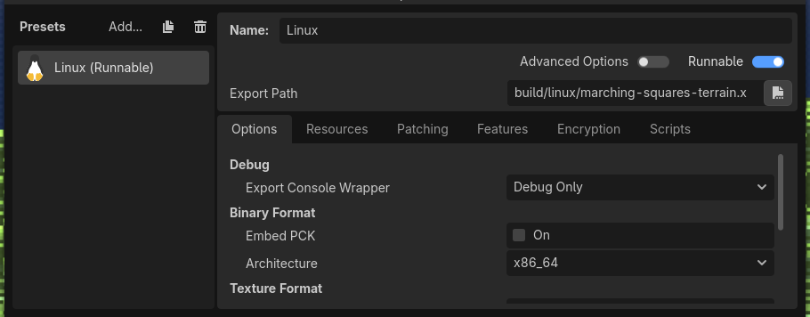
Presets list · Add… / duplicate / delete
One preset per target platform. Add… creates one (Windows, macOS, Linux, Android, Web…). The icons duplicate or delete the selected preset.
Name
The preset's name (here "Linux").
Runnable
Marks this preset as the one used for one-click deploy. On here.
Advanced Options
Shows extra settings. Off by default.
Export Path
Where the game file is written.
- This project
build/linux/marching-squares-terrain.x86_64
Options · Resources · Patching · Features · Encryption · Scripts
Detailed export settings. Defaults are fine for a first build.
Export Console Wrapper
Whether a console window comes along to show log messages.
- This project
- Debug Only
Embed PCK
Packs the game data inside the program file (one file) instead of beside it (a .pck next to it).
- This project
- Off
Architecture
The CPU type to build for.
- This project
- x86_64
Manage Export Templates
Opens the Export Template Manager.
Export PCK/ZIP…
Exports only the game data package, without the runnable program. Works without templates.
Export Project…
Builds the runnable game. Greyed out until export templates are installed.
Export All…
Exports every preset in one go. Also needs templates.
Export templates (install once)
Export templates are the pre-built "game player" programs Godot combines with your project. They're a separate download, one set per Godot version (this project: 4.7.2.stable). Without them, the dialog shows red "No export template found at the expected path" errors for linux_debug.x86_64 and linux_release.x86_64, and Export Project… stays greyed out.

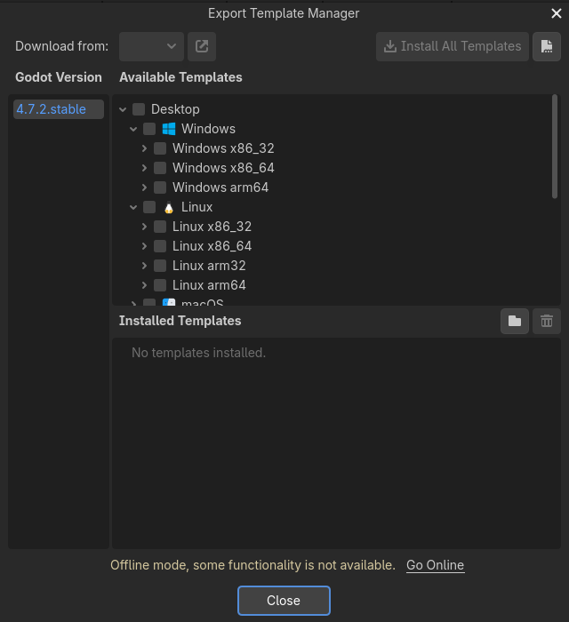
You can also open it from Editor → Manage Export Templates…. Once installed, Export Project… becomes clickable.
This guide doesn't show a finished build, because export templates weren't installed on the computer used to make it. The steps above are the standard Godot flow; the template download is large (hundreds of MB).
Roblox Publishes your place to Roblox's servers, and players reach it through the Roblox app. Godot Exports a standalone program that runs on its own — no launcher, no cloud host. You own the files and share them however you like (zip, itch.io, Steam…). There's no "Publish to Roblox" button; the bridge to Roblox is the GLB export.
Sharing screenshots and video
- Editor screenshot: Editor → Take Screenshot. The image is saved to the editor data folder — open it with Editor → Open Editor Data Folder.
- In-game screenshot: the demo has no screenshot key (the hint lists none). Use your operating system's screenshot tool on the game window.
- Video: turn on Movie Maker in the Run bar, then play. The game runs at a steady frame rate and records picture and sound to a video file.
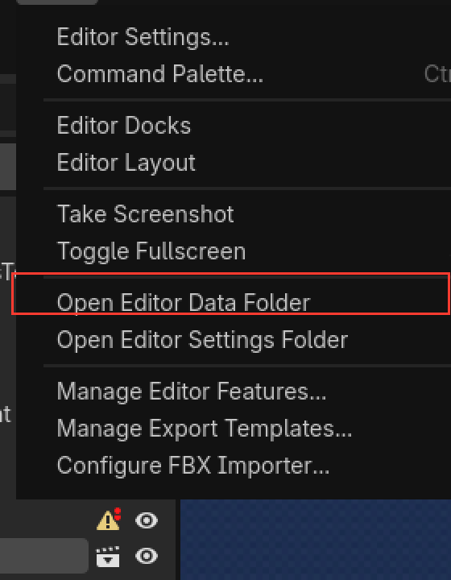
Roblox has a screenshot button in the in-game menu. Here the editor has one (Editor → Take Screenshot), but the running demo doesn't — use your OS tool, or record with Movie Maker.
Recipes
Quick playtest loop
Edit → Ctrl+S → F6 → walk → F8. Repeat. Keep the scene tab you want active before pressing F6.
Make your world the game's start
Project → Project Settings… → Application → Run → Main Scene → file button at the right of the row → pick your scene (e.g. res://tutorial/guide/first_world_player.tscn). Now F5 and exports start there.
Start the player somewhere else
Select PlayerRig → Transform → Position. Keep Y above the ground at that spot. Like moving a SpawnLocation.
Player falls into the void
Only sky and sea after F6? Raise PlayerRig's Position Y above your highest ground, save, play again. See the trap.
My change doesn't show in the game
Save first — F6 runs the saved file. And check you pressed F6, not F5 (which runs the Main Scene).
Play as the Fox
Instance res://demo/fox_player.tscn instead of player.tscn, move it above the ground, save, F6.
Chunkier pixels for a screenshot
Make the game window smaller before taking the shot — fewer, bigger pixels. Bigger window = finer pixels.
Take your terrain into Roblox
Set Export Path outside the project → Export GLB → Roblox Studio → 3D Importer → pick the .glb → a MeshPart with the baked texture.
Take your terrain into Blender
Export GLB → Blender → File → Import → glTF 2.0. One mesh, one material, one atlas texture.
Send a friend the game
Install export templates once → Project → Export… → pick/add your platform preset → Export Project… → zip the output folder.
Record a trailer
Enable Movie Maker, play, walk your route, stop. The video file is written for you.
Try weather without editing anything
Run the demo island, F3, click Rain / Snow / Storm. Nothing is saved.
Check yourself
You're editing your own world and press F5, but the demo island opens. Why, and what should you press instead?
F5 runs the project's Main Scene, which here is res://demo/hex_island.tscn. Press F6 to play the scene you're editing (or change the Main Scene in Project Settings → Application → Run).
You added the player, pressed F6, and see only sky and sea. What happened?
The PlayerRig was left at (0, 0, 0), inside the hill, so it fell straight through. Select it, set Transform → Position Y above your ground (e.g. 5, 8, 4), save, and press F6 again. Not a bug.
F3 does nothing in your first_world. Is it broken?
No. The F3 Pixel tuner needs a PixelDiagnostics node in the scene; only the demo island has one.
Export Project… is greyed out. What's missing?
Export templates. Click Manage Export Templates (or Editor → Manage Export Templates…), go online, and install them for your Godot version.
Which export gets your terrain into Roblox Studio, and where's the safest place to save it?
Export GLB on the Storage settings page, then Studio's 3D Importer. Save it to a folder outside the project to avoid the re-import crash risk.
Related pages
- Your first world (quick start) — builds
first_world.tscn, the scene the tutorial adds a player to. - Chunks, settings & saving — the Storage page in full: Storage Mode, Bake Meshes, Import MST, Export GLB.
- The pixelizer — pixel size, outlines, debug views.
- Sky, weather, water & effects — the effects you can toggle in the F3 tuner.
- Importing models — bring a GLB back into Godot.
- Shortcuts & Roblox→Godot glossary.
- Troubleshooting & FAQ.
Follow-along scene: res://tutorial/guide/first_world_player.tscn (in the repo at tutorial/guide/first_world_player.tscn) — first_world.tscn plus a PlayerRig at (5, 8, 4).